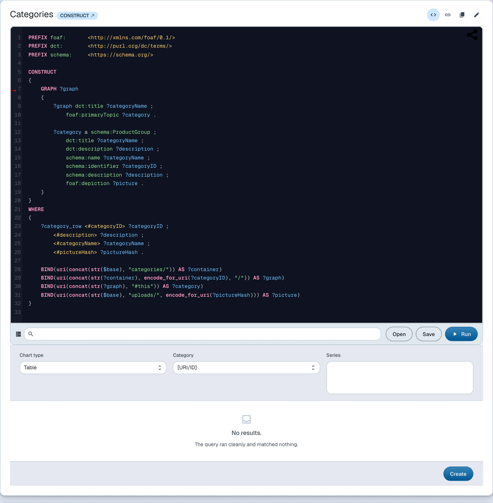
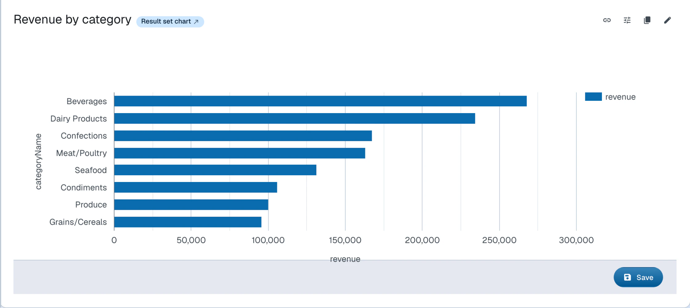
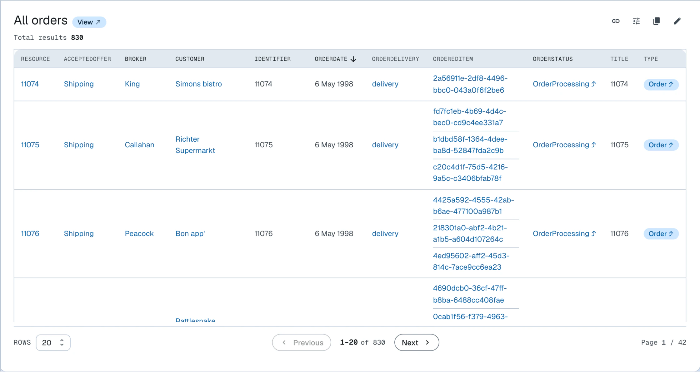
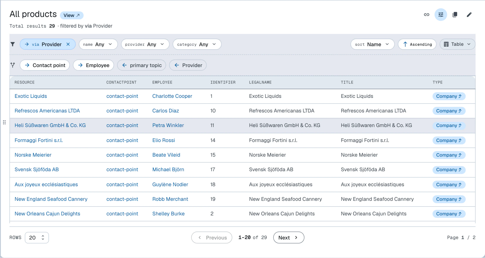

Resources
RDF resources and their management
Within documents, users can create RDF resources, i.e. instances of both built-in and user-defined RDF classes.
Built-in classes are defined in system ontologies while user-defined classes are defined in user ontologies.
User-defined classes
User-defined classes live in the dataspace's namespace ontology, which is managed in the admin dataspace. A class becomes creatable in the UI once it has a constructor: it then appears in the Create dropdown alongside the built-in classes, and its instances are created and edited using the same forms. See Change the model for a walkthrough of defining classes, constructors and constraints.
Built-in classes
LinkedDataHub's built-in classes have pre-defined constructors, constraints and often a customized UI rendering (implemented by overriding generic XSLT templates with type-specific templates) as well, for example a query editor or a chart.
The table lists the built-in classes creatable from the Create dropdown; the two content block classes, ldh:XHTML and ldh:Object, are documented on the Content blocks page.
| Type | Class | Description |
|---|---|---|
| ASK | sp:Ask |
SPARQL ASK query |
| Dataspace | lds:Dataspace |
Remote LinkedDataHub dataspace |
| CONSTRUCT | sp:Construct |
SPARQL CONSTRUCT query |
| CSV import | ldh:CSVImport |
Asynchronous CSV data import |
| DESCRIBE | sp:Describe |
SPARQL DESCRIBE query |
| File | nfo:FileDataObject |
An uploaded file, stored content-addressed under uploads/ |
| Graph chart | ldh:GraphChart |
Chart based on CONSTRUCT/DESCRIBE query results |
| RDF import | ldh:RDFImport |
Asynchronous RDF data import |
| Result set chart | ldh:ResultSetChart |
Chart based on SELECT query results |
| Select | sp:Select |
SPARQL SELECT query |
| Service | sd:Service |
SPARQL service (identified by its endpoint URL) |
| View | ldh:View |
View based on SELECT query results |
Resources that have customized UIs (such as queries, views, charts) are documented in more detail below.
Queries

Queries are SPARQL 1.1 query strings that can be executed interactively. A query may name the SPARQL service it executes against; otherwise it runs against the dataspace's own service.
A query is a resource typed by its SPARQL form, carrying the query string as sp:text:
<#select-categories-query> a sp:Select ;
dct:title "Select categories" ;
sp:text '''PREFIX schema: <https://schema.org/>
SELECT DISTINCT ?category
WHERE
{ GRAPH ?doc
{ ?category a schema:ProductGroup ;
schema:name ?categoryName
}
}
ORDER BY ?categoryName''' .
Source: categories.ttl · Live: /categories/
It is only possible to save valid SPARQL 1.1 query strings. SPARQL updates are currently not supported.
Charts

Charts can render both types of SPARQL results:
- tabular
SELECTresults (ldh:ResultSetChart) - graph results of
DESCRIBEandCONSTRUCT(ldh:GraphChart)
A chart resource is easily confused with the chart layout mode in views. The layout mode renders view results as a chart on the fly, while a chart resource additionally stores the chart type as well as the category and series information: variable names in the case of tabular results, and property URIs in the case of graph results.
RDF vocabulary
A chart references its query with spin:query and describes its rendering with the following properties:
| Property | Applies to | Description |
|---|---|---|
ldh:chartType |
both | One of ac:Table, ac:LineChart, ac:BarChart, ac:ScatterChart, ac:Timeline |
ldh:categoryVarName |
ldh:ResultSetChart |
Name of the SELECT variable that provides the category values |
ldh:seriesVarName |
ldh:ResultSetChart |
Name(s) of the SELECT variable(s) that provide the series values |
ldh:categoryProperty |
ldh:GraphChart |
URI of the property that provides the category values |
ldh:seriesProperty |
ldh:GraphChart |
URI(s) of the property(ies) that provide the series values |
The default chart type is the table. Other chart types might not apply to all result data; for example, a scatter chart needs numeric or datetime values for both category and series.
A complete chart is a chain of three resources — the query, the chart description, and an object block that places it on a document:
<#category-revenue-query> a sp:Select ;
dct:title "Category revenue" ;
sp:text '''PREFIX schema: <https://schema.org/>
SELECT ?categoryName (SUM(?sale) AS ?revenue)
WHERE {
GRAPH ?orderGraph {
?order schema:orderedItem ?orderItem .
?orderItem schema:orderedItem ?product ;
schema:price ?sale .
}
GRAPH ?productGraph {
?product schema:category ?category .
}
GRAPH ?categoryGraph {
?category schema:name ?categoryName .
}
}
GROUP BY ?category ?categoryName
ORDER BY DESC(?revenue)''' .
<#category-revenue> a ldh:ResultSetChart ;
dct:title "Revenue by category" ;
spin:query <#category-revenue-query> ;
ldh:chartType <https://w3id.org/atomgraph/client#BarChart> ;
ldh:categoryVarName "categoryName" ;
ldh:seriesVarName "revenue" .
<#category-revenue-block> a ldh:Object ;
dct:title "Revenue by category" ;
rdf:value <#category-revenue> .
Source: categories.ttl · Live: /categories/
Multiple ldh:seriesVarName values plot one series per named result variable — see the
demo's revenue-by-carrier chart,
which pivots three carriers into three series with conditional aggregation.
Views

A view renders the results of a SPARQL SELECT query as an interactive, paginated and optionally ordered list.
The UI renders the descriptions of the resources selected by the result set, rather
than the tabular result itself.
That is achieved by on-the-fly SPARQL query rewriting: the SELECT is wrapped into
a DESCRIBE query; DESCRIBE reuses the same variables from the SELECT projection.
This will not work for all SELECT queries.
To render paginated lists of resources, traditional applications would normally have a dedicated API endpoint that supports pagination, ordering etc. In LinkedDataHub, views achieve the same functionality by simply building the SPARQL query string on the client-side. A view is therefore a client-side counterpart of a container: it produces a listing without a server-side endpoint.
A view references its query and optionally fixes a layout mode:
<#select-categories-view> a ldh:View ;
spin:query <#select-categories-query> ;
ac:mode <https://w3id.org/atomgraph/client#GridMode> .
Source: categories.ttl · Live: /categories/
Views can be rendered in multiple layout modes: properties, list, grid, table, map, chart, and graph. They also show the total number of results and allow result ordering by property. In the table mode, columns can be sorted by clicking their headers; the sort order follows each column's datatype.
Projecting variables
Because the SELECT is rewritten into a DESCRIBE over its projected variables, a view can only render terms that the triplestore is
able to describe:
- Project resources (IRIs) that exist in the dataset — their labels, images and links are resolved from
each resource's own description. Projecting literals (a
?label, a?date, or any computed value) describes nothing, so the view renders empty. - Project IRIs that are stored locally. An IRI that only occurs as an object but is not itself described in the dataset — for example an external image URL — contributes no triples.
- Project a single entity type. Projecting several resource variables of different types blends their descriptions into one result set, which rarely renders coherently; select the one type you want to list and reach the related resources through their properties instead.
The query that drives the categories grid above projects the category resource, so the view renders the category documents:
SELECT DISTINCT ?category
WHERE {
GRAPH ?doc {
?category
a schema:ProductGroup ;
schema:name ?categoryName
}
}
This query looks equivalent, but it projects the name literal instead of the category resource — so it describes nothing and renders an empty view:
SELECT DISTINCT ?categoryName
WHERE {
GRAPH ?doc {
?category
a schema:ProductGroup ;
schema:name ?categoryName
}
}
Layout modes
View results are rendered in the view's own set of layout modes — properties, list, grid, table, map, chart, and graph — a larger set than the document layout modes.
Inline creation
A view attached to a property in the dataspace's ontology renders a Create button in its header, so a view can double as an entry point for the data it lists.
The class to construct is inferred from the attaching property: its rdfs:range for a forward ldh:view, its rdfs:domain for an inverse ldh:inverseView. A property whose range is not a named class — an owl:unionOf list, say — gets no button, because there is nothing to construct.
Where the new instance is stored is not declared anywhere. LinkedDataHub works it
out from the view's own results: a second query, derived from the view's SELECT pattern with LIMIT, OFFSET and ORDER BY removed, asks which containers hold the documents that describe the existing solutions.
A view is a projection and its rows are its solutions, so creating a row means making
a new solution appear in that projection — and the existing solutions already say
where their descriptions live.
- Exactly one container — the button renders and targets it.
- No container, because the result set is empty — no button. There is nothing to generalise from, so the first instance of a kind is created through its container the usual way.
- More than one container, because the results span several — no button. Nothing in the data says where a new row belongs, and deciding by majority would be placement nobody stated.
The question is put to the whole result set rather than to the page on screen, so
the destination cannot depend on which page the reader happens to be looking at. The
determined container is then checked for acl:Write access, which is why the button appears a moment after the rest of the view header;
a forward view also writes the linking triple into the current document, so it needs
write access there as well.
A view with ldh:showWhenEmpty set to false is hidden while its query returns no results — the
demo's property-attached views
use it so "Orders from this customer" only appears on customers that have orders.
<#select-products-view> a ldh:View ;
spin:query <#select-products-query> ;
ac:mode <https://w3id.org/atomgraph/client#TableMode> ;
ldh:showWhenEmpty false .
Faceted search
Views provide faceted search in the toolbar at the top of the view, filtering the result set. The toolbar renders one dropdown pill per facetable property; opening a pill loads that property's values together with their result counts, and checking a value filters the results. Applying or removing a filter restarts paging from the first page.
By default the facets are generic and inferred from the triple patterns of the SPARQL
SELECT query used by the view. They can be customized using XSLT.
Parallax navigation

Parallax is an unusual navigation approach that suits graph data particularly well. It allows jumping from a result set to a related result set by following an RDF property. The available pivots render as a row of chips directly under the view toolbar, one chip per property linking the result set to the rest of the graph; the row stays hidden while there are no pivots. Parallax navigates in both directions: a chip with a forward arrow follows a property of the results onto its objects, a chip with a backward arrow follows a property pointing at the results onto its subjects. The pivots are discovered by querying the whole result set, so they cover results beyond the current page.
Clicking a chip pivots the view onto the related result set and restarts paging from the first page. The applied steps appear in the toolbar next to the facets as removable chips reading via (forward) or linked by (backward); removing one rewinds the view to that step. Parallax works in combination with faceted search which can be used to filter the initial result set.
For example, facets can be used to filter a set of products that belong to a certain category, and then parallax can be used to jump to a set of companies that provide those products, and then further on to a set of representatives of those companies.
Live example
The block below is not a code snippet — it is an actual query block embedded in this document, executing against the Northwind Traders dataspace's SPARQL endpoint. The query, the service it runs against, and the block that places it here are three plain RDF resources in this very document.
Interactive block: Query another dataspace — executes live in the LinkedDataHub rendering of this page
Management
Resources can only be managed when the Properties layout mode is active.
| Action | Description |
|---|---|
| Create | Click the Create dropdown at the bottom of the page. Fill out the fields in the form that appears. Click Save. |
| Update | Click the button in the top-right corner of the resource block (it appears when you move the mouse close to that corner). Make changes in the form that appears. Click Save. |
| Delete | Click the button in the top-right corner of the resource block. Click the button to delete the resource. |
The following resource types can be created using the command line interface. Any resource can be updated or deleted with ldh patch, which applies a SPARQL update to the resource's document.
| Type | CLI command |
|---|---|
| CONSTRUCT | ldh add construct |
| CSV import | ldh add csv-import |
| File | ldh add file |
| RDF import | ldh add rdf-import |
| Result set chart | ldh add result-set-chart |
| Select | ldh add select |
| Service | ldh add generic-service |
| View | ldh add view |
To query data and create resources step-by-step, follow the Query data and Create resources guides